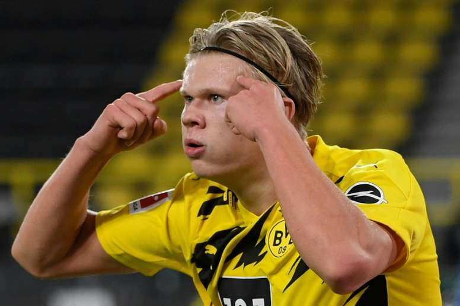

홀란드는 전 유럽이 주목하는 스트라이커다. 그야말로 괴물 같은 득점력을 보이고 있는 홀란드는 빅클럽의 러브콜을 한몸에 받고 있다.
레알 마드리드, 바르셀로나, 맨시티, 첼시 등이 지켜보는 가운데, 확실한 스트라이커가 필요한 맨유 역시 홀란드를 지켜보고 있다.
맨유는 올 여름 최우선 과제로 홀란드를 점찍고, 영입전에 뛰어들 준비를 마쳤다.

하지만 홀란드의 아버지이자 과거 맨시티에서 뛰었던 알프 잉에 홀란드는 맨유행에 부정적인 태도를 보였다.
29일(한국시각) 맨체스터 이브닝 뉴스와의 인터뷰에서 "맨유와 비교는 쉽지 않다. 왜냐면 홀란드는 이미 도르트문트에서 뛰고 있기 때문이다.
맨유와 도르트문트는 큰 서포터스와 거대한 역사를 가진 큰 클럽"이라고 했다. 이어 "맨유는 독일의
도르트문트처럼 매우 자랑스러운 클럽"이라고 했다. 도르트문트에서 맨유로 가는 것이 큰 도약이라고 생각하지 않는다는 뉘앙스였다.